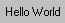

(text = "", font = "", size = "", weight = "", justify = "LEFT",
underline = false, color = "", whitebgnd = false,
status = "", sunken = false, notify = false, bgndcolor = "")
Creates a Windows "static" control.
For example, #(Static "Hello World") would produce:
Note: Remove the final () if putting this code in a library.
Controller
{
Title: 'test StaticControl'
Xmin: 200
Ymin: 300
New()
{
.Vert.St1.SetColor(RGB(0, 0, 255))
.Vert.Hz1.St4.Set('Hello World')
.Vert.Hz1.St4.SetFont('Ms Sans Serif', 20, underline:)
.Vert.Hz2.StOne.SetStatus('click to change back color')
.Vert.Hz2.StTwo.SetStatus('doubleclick to change text color')
.oneclick = -1
.twoclick = -1
}
Commands:
((Exit, "Ctrl+X"))
Controls:
(Vert
(Skip)
(Horz
Fill
(Static 'Hello World', justify: 'CENTER',
font: 'Ms Sans Serif', size: 14, weight: 700)
Fill
)
(Horz
Fill
(Static 'Hello World', justify: 'CENTER',
font: 'Ms Sans Serif', size: 14, whitebgnd: true)
Fill
)
(Skip)
(Static name: 'St1', 'Hello World', xmin: 100)
(Field width: 11)
(Static 'Hello World', color: #(0, 0, 255), justify: "CENTER", xmin: 100)
(Field width:11)
(Static 'Hello World', color: 16711680, justify: "RIGHT", xmin: 100)
(Field width: 11)
(Skip 20)
(Horz name: "Hz1"
(Static name: 'St4', color: 16711680, justify: 'CENTER')
(Skip 20)
(MenuButton "change to", #("invisible", "visible", "disabled", "enabled"))
)
(Skip 30)
(Horz name: "Hz2"
(Static name: 'StOne', 'click', font: 'Arial', size: 14, justify: 'CENTER'
sunken:, notify:, whitebgnd:, xmin: 200)
(Skip)
(Static name: 'StTwo', 'double click', font: 'Arial', size: 14, justify: 'CENTER'
sunken:, notify:, xmin: 200)
)
)
On_change_to_invisible()
{ .Vert.Hz1.St4.SetVisible(false) }
On_change_to_visible()
{ .Vert.Hz1.St4.SetVisible(true) }
On_change_to_desabled()
{ .Vert.Hz1.St4.SetEnabled(false) }
On_change_to_enabled()
{ .Vert.Hz1.St4.SetEnabled(true) }
Static_Click(source)
{
if source.Name is 'StOne'
{
brushes = Object(SO.LTGRAY_BRUSH, SO.DKGRAY_BRUSH, SO.GRAY_BRUSH,
SO.BLACK_BRUSH, SO.WHITE_BRUSH)
++.oneclick
if (.oneclick is 5)
.oneclick = 0
if (.oneclick is 4)
.Vert.Hz2.StOne.SetColor(RGB(0, 0, 0))
else
.Vert.Hz2.StOne.SetColor(RGB(255, 255, 0))
.Vert.Hz2.StOne.SetBgndBrush(brushes[.oneclick])
}
}
Static_DoubleClick(source)
{
if source.Name is 'StTwo'
{
colors = Object(255, 32768, 16711680, 33023, 32896, 8388863, 0)
++.twoclick
if (.twoclick is 7)
.twoclick = 0
.Vert.Hz2.StTwo.SetColor(colors[.twoclick])
}
}
}()
Another example, demonstrating colors:
Controller
{
Xmin:300
Ymin:300
Title: 'test StaticControl with colors'
New()
{
.oldcolor= CLR.RED
.Vert.S1.SetColor(CLR.WHITE)
.Vert.Horz.S5.SetBgndColor(CLR.YELLOW)
.Vert.Horz.S5.SetColor(RGB(0, 0, 255))
.Vert.Horz.S7.SetBgndBrush(SO.LTGRAY_BRUSH)
}
Commands:
((Exit,"Ctrl+X"))
Controls:
(Vert
Skip
(Static 'Suneido' name: 'S0' size:12)
Skip
(Static 'Suneido' name: 'S1' bgndcolor:#(0, 0, 0) size:12)
Skip
(Static 'Suneido, double click here!' name: 'S2' color: 3107669 weight:800
xmin:250 notify:true sunken:true size:12)
Skip
(Static 'Suneido' name: 'S3' bgndcolor:#(222, 184, 135) size:12)
Skip
(Static 'Suneido' name: 'S4' color:0x003C14DC size:12)
Skip
(Horz
(Static 'Suneido' name: 'S5' xmin:100 size:12)
(Static 'Suneido' name: 'S6' whitebgnd:true size:12)
(Static 'Suneido' name: 'S7' size:12)
)
)
Startup()
{.Window.Center()}
Static_DoubleClick(source)
{
if source.Name is 'S2'
{
color = .Vert.S2.GetColor()
.Vert.S2.SetColor(.oldcolor)
.oldcolor = color
}
}
}()